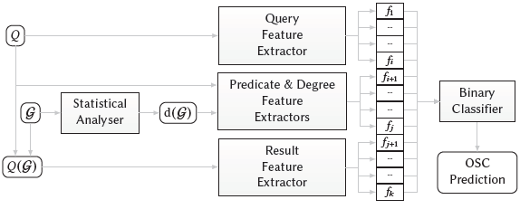

Abstract
Given historical versions of an RDF graph, we propose and compare several methods to predict whether or not the results of a SPARQL query will change for the next version. Unsurprisingly, we find that the best results for this task are achievable by considering the full history of results for the query over previous versions of the graph. However, given a previously unseen query, producing historical results requires costly offline maintenance of previous versions of the data, and costly online computation of the query results over these previous versions. This prompts us to explore more lightweight alternatives that rely on features computed from the query and statistical summaries of historical versions of the graph. We evaluate the quality of the predictions produced over weekly snapshots of Wikidata and daily snapshots of DBpedia. Our results provide insights into the trade-offs for predicting SPARQL query dynamics, where we find that a detailed history of changes for a query's results enables much more accurate predictions, but other alternatives we propose have significantly less overhead.
Predicting OSC Query Dynamics
 We present the architecture for our proposed system for predicting \osc in Figure~\ref{fig:schema}. The inputs are a query $Q$ and a dynamic RDF graph $\mathcal{G}$. The system then extracts a feature vector $(f_1,\ldots,f_k)$. from these inputs and feeds them into a pre-trained binary classifier to make the \osc prediction. The query features $(f_1,\ldots,f_i)$ are extracted online from the query itself. The predicate and degree features $(f_{i+1},\ldots,f_j)$ are extracted from a statistical description $\desc(\mathcal{G})$ of $\mathcal{G}$, whose details will be described later; in practice, $\desc(\mathcal{G})$ can be computed and maintained offline (independently of the query) in an incremental manner, requiring only the two most recent versions of $\mathcal{G}$ to be updated. Finally, the results features $(f_{j+1},\ldots,f_k)$ require as input the full historical results of $Q$ for each version of $\mathcal{G}$ (which we denote by $Q(\mathcal{G})$); this must be computed online. The binary classifier is pre-trained over a given set of queries $\mathcal{Q}$ for which ground truths are computed over withheld versions.
Experimental Data
- Wikidata
- DBpedia Live